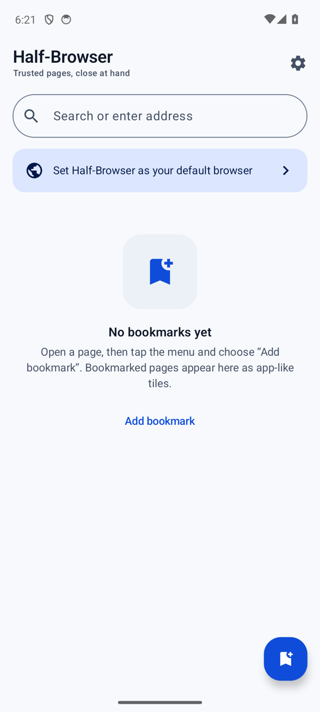
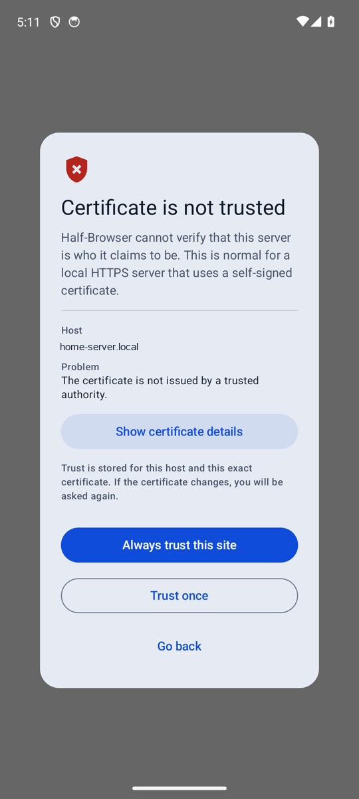
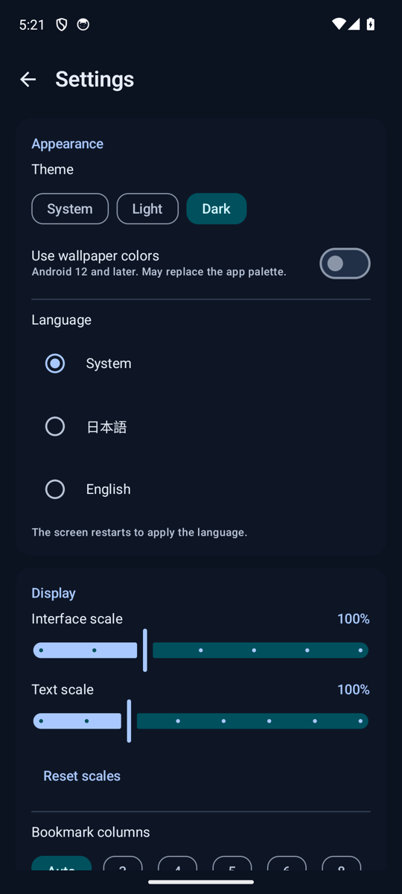
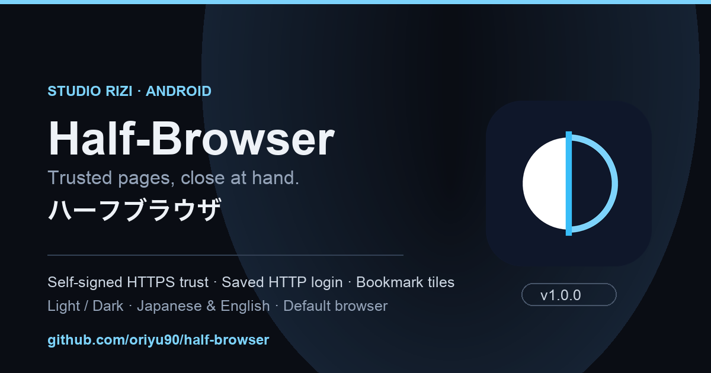

Android 8.0+ · Android WebView（Chromium） · v1.1.0 · MIT
Half-Browser / ハーフブラウザ信頼したページを、
手元に近く。
Half-Browser は、Android WebView（Chromium）で動く軽量ブラウザです。自己署名証明書の HTTPS ページは、証明書の内容を確認してから信頼するかを選べます。HTTP 認証の資格情報は、Android Keystore で暗号化して保存し、次回から自動入力できます。広告・解析・アカウントはありません。
v1.1.0: ファイル添付・カメラ・位置情報・動画の全画面、ブックマークしたページの更新通知に対応しました。
- 対応OS
- Android 8.0（API 26）以降
- UI 言語
- 日本語 / English
- ライセンス
- MIT・無料
- 開発者
- 折田悠希（Yuki_Orita）

What it does
必要なものだけの、
ブラウザ。
Half-Browser は Android WebView を土台に、ページを開く、ブックマークを置く、信頼を確認する、という操作を静かに行うブラウザです。広告や解析は入っておらず、使い方に応じて設定を変えられます。
自己署名証明書のページも、確認して開く。
自宅 LAN のサーバーなど、公的な認証局が発行していない HTTPS ページでは、証明書のホスト・発行者・SHA-256 フィンガープリント・有効期限を確認してから、「今回だけ信頼」か「このサイトを常に信頼」を選べます。
HTTP 認証は、暗号化して自動入力。
Basic / Digest の認証で入力したユーザー名とパスワードを保存し、次回から自動入力できます。Android Keystore と EncryptedSharedPreferences で暗号化し、バックアップの対象にはしません。
ブックマークは、アイコン付きのタイルで。
ホーム画面にブックマークをグリッドで並べます。アイコンはオフラインで生成する文字のモノグラムで、長押しから編集・削除・共有、ホーム画面へのショートカット追加ができます。
外部リンクを、既定ブラウザとして受け取る。
Android の設定で既定ブラウザに選ぶと、他のアプリからのリンクを受け取ります。ブックマーク済みの URL なら、ブックマーク名を表示する専用バーとともに開きます。
ダーク、ライト、システムに合わせて。
ダーク・ライト・システムのテーマを選べます。対応端末では動的カラーも利用できます。
スマホでもタブレットでも、読みやすく。
UI スケールは 80〜140%、文字スケールは 80〜150% で調整できます。グリッドの列数は自動・3・4・5・6・8 から選べ、横向きにも対応しています。
Self-signed HTTPS
証明書を見て、
決めてから信頼する。
証明書が信頼されないとき、Half-Browser は「なぜ信頼されないか」を示し、中身を確認する手段を用意します。判断は利用者が行います。
-
01
警告を読む
ホスト名と、証明書が信頼されない理由（公的な認証局の発行ではない等）を表示します。
-
02
詳細を確認する
発行者・SHA-256 フィンガープリント・有効期限を「証明書の詳細」で確かめられます。
-
03
範囲を選ぶ
「今回だけ信頼」か、「このサイトを常に信頼」を選びます。信頼はホストと証明書の組み合わせごとに保存されます。
-
04
変わったら、また聞く
証明書が変わると、その時点で再び確認を求めます。設定画面からいつでも信頼を取り消せます。

HTTP authentication
資格情報は、端末の中で守る。
HTTP 認証（Basic / Digest）のユーザー名とパスワードは、Android Keystore に紐づく鍵で暗号化された EncryptedSharedPreferences に保存されます。暗号化されていない HTTP 接続では保存しません。
保存した資格情報は、設定画面からいつでも削除できます。Android のバックアップ対象からも除外しています。
Home and bookmarks
よく使うページを、
タイルで並べる。
ホーム画面は、検索欄とブックマークのグリッドで構成されます。よく使うページをタップ一つで開き、長押しで整えられます。


- アイコン付きタイルオフラインで生成する文字のモノグラム。編集で好きな名前とアイコンに変えられます。
- 長押しの操作編集・削除・ホーム画面ショートカットの追加・共有をまとめて行えます。
- ショートカット確認ホーム画面に追加する前に、ランチャーへの確認を挟みます。
- グリッドの列数自動・3・4・5・6・8 から、画面の広さに合う列数を選べます。
Default browser
既定ブラウザに選ぶと、
リンクを受け取る。
Android では、既定ブラウザはユーザーが OS の設定で選びます。Half-Browser を選ぶと、他のアプリで開いた外部リンクを受け取ります。ブックマークに登録済みの URL なら、ブックマーク名を表示する専用バーとともに開きます。
Display and language
画面の広さと、
読みやすさに合わせる。
スマートフォン、タブレット、横向きの画面に対応しています。文字や UI の大きさを変えても、ホームと設定は崩れないように組んでいます。
-
スマートフォン・縦
検索欄とブックマークを上から順に。片手でも操作しやすい構成です。
-
スマートフォン・横
横向きでもホームのグリッドとブラウズ画面を使えます。
-
タブレット
広い画面でもブックマークのタイルを読みやすく並べます。
UI 言語は日本語と English に対応しています。端末の言語設定に従って表示されます。
Get started
v1.1.0 を、GitHub から。
Half-Browser のソースは GitHub で公開しています。最新版は GitHub Releases から入手できます。
Releases を開く- GitHub のリポジトリ github.com/oriyu90/half-browser を開きます。
- Releases から最新版の APK を取得し、Android 端末にインストールします。
- Android の設定で既定ブラウザに選ぶと、外部リンクを Half-Browser で開けます。
- ソースから動かす場合はリポジトリをクローンし、Android Studio で開きます。
対応OSは Android 8.0（API 26）以降です。インストールには、提供元不明のアプリに関する設定の許可が必要になる場合があります。
Developer
つくった人と、つながる場所。
開発者は折田悠希（おりたゆき / Yuki_Orita）。バグ報告や要望は Discord へ、日々の記録は X と公式サイトで。ソースとリリースは GitHub にあります。